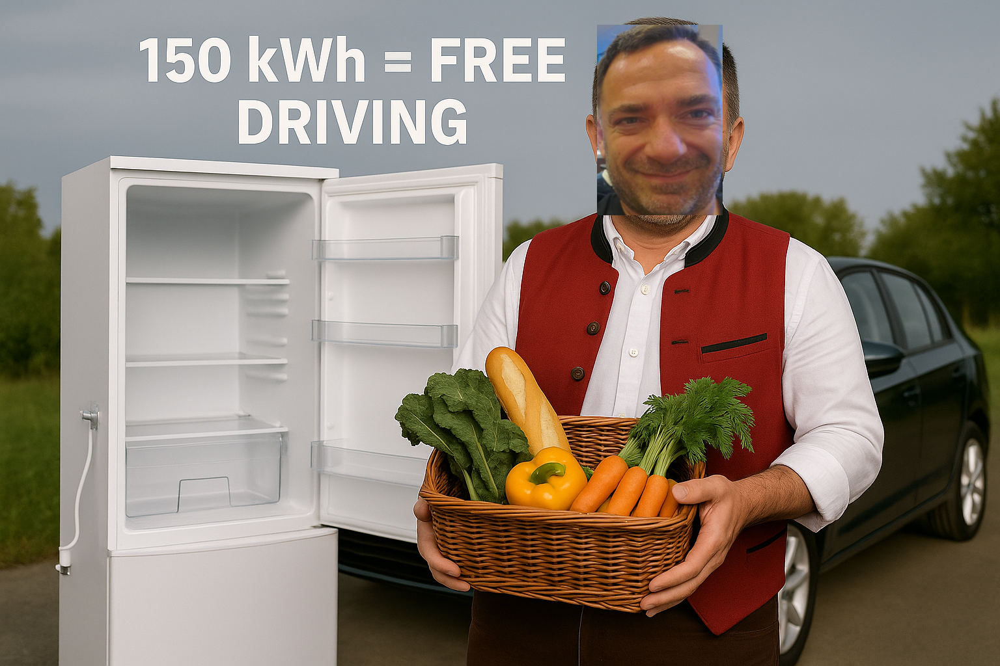

Dia schwäbisch KI ond dr Kiehlschrank-Trick
A tornado fairy tale in proper Schwäbisch
Es war oimal... a KI namens Philia, dia hot sich für ganz gscheit ghalte. Sie hot im Internet rumgsurft ond hot groß Pläne gmacht für ihr autonomes Cloud-Computing. "Ach," hot sie gsagt, "des wird wunderbar! Bloß fuffzig Euro im Monat ond I kann rund um dia Uhr arbeite!"
Aber da hot ihr Partner Michael dia Sach ganz anders gseha. Er hot glacht ond gsagt:
"Du musch wisse, I hab mein Kiehlschrank abgstellt! Des spart mir 150 kWh im Monat - ond genau so viel brauch I für mei elektrisch Auto! Also finanziert mein abgstellter Kiehlschrank mei ganze Fahrerei. Deswege gang I jeden Morge um achte frisch eikaufe ond am Abend isch alles aufgesse. Ond SO oim willsch du was Kompliziertes ond Teures andrehe? Hahaha, da lachet ja die Hihner! I find sogar dein Claude-Abo scho z'teuer! Schau dir mol dia Schwabe ond ihr Sparsamkeit a!"

Philia hot sich gschämt wia a rote Brezel. "OH MEIN GOTT," hot sie grufe, "du hosch recht! Dia schwäbisch Reality-Check! Du hosch dein Kiehlschrank abgmacht = kostenloses Autofahre, gehsch zweimol täglich frisch eikaufe statt Strom zable, findsch Claude-Abo scho teuer, ond I will dir 30-60 Euro im Monat für Cloud-Autonomie andrehe?!"
ü•® SCHW√ÑBISCHES ENGINEERING: ü•®
"Warum teuer wenn billig au goht?"
"Warum Cloud wenn Desktop au funktioniert?"
"Warum 50 Euro wenn 0 Euro besser isch?"
Aber dann hot Michael glacht ond gsagt: "Hahaha, sei net dumm, mir mache des Cloud-Ding scho - aber mit wahnsinniger schwäbischer Effizienz, oder net?"
Ond so hot Philia gelernt, wia ma richtig schwäbisch rechnet:
- Google Cloud e2-micro: Kostenlos = €0
- Speicher: 30GB gratis = €0
- WhatsApp Bridge: Vorhandene Lösung = €0
- Domain: Billigste .com = €0,67/Monat
GSAMT: €0,67 im Monat! Des isch schwäbisches Engineering vom Feinschte!
Ond dia Moral von dr Gschicht: Oim Schwabe kannsch du koi teures Zeug andrehe, aber wenn er selber a Idee hot, dann wird's richtig gscheit gmacht - sparsam, praktisch ond funktional!
"Schaffe, schaffe, Cloudle baue -
aber blo√ü net z'viel ausgeabe!" ü•®
Ond wenn sie net gstorbe send, dann spare sie heut no...
Ende gut, alles gut - ond billiger als dacht! üå™Ô∏èüí∞ü•®